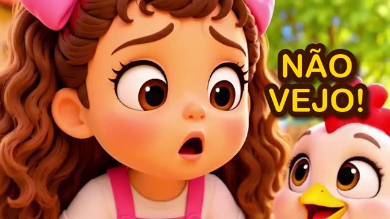
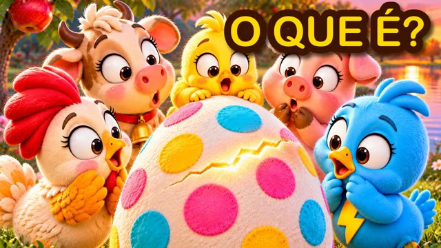
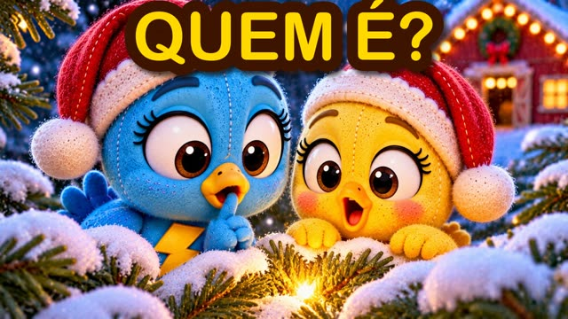
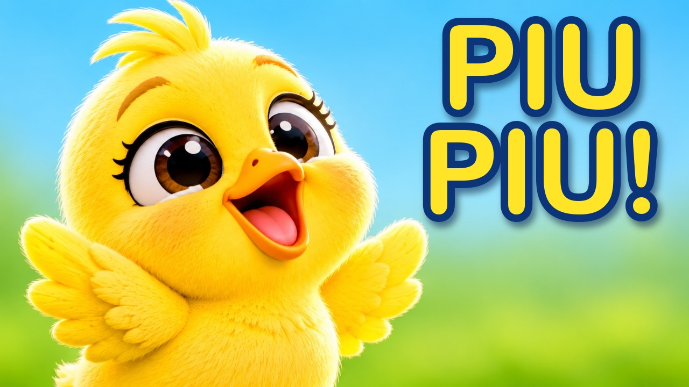
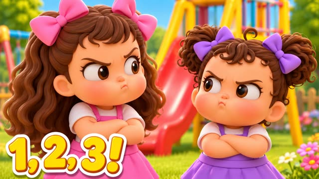

⏳ Próximas estreias desenhos infantis novos toda semana

EM BREVE
EM BREVE
EM BREVEOs vídeos ficam disponíveis no canal nos dias e horários indicados: segunda, quarta e sexta, às 12h.
⭐ Novidades os episódios mais recentes
 NOVO!
NOVO!



🏆 Os mais queridos os vídeos mais assistidos do canal


📱 Shorts
📂 Playlists e canal
🛍️ Lojinha da Maju e Maitê para os papais
Bonecas, livrinhos e brinquedos da Maju e da Maitê, com link direto para o Mercado Livre e a Shopee.
🔎 Desenhos infantis e músicas para crianças
Karatê infantil
Procurando karatê para crianças ou música de karatê infantil? No Karatê do Jacaré, a Maju e a Maitê treinam no dojo com o Sensei Escamoso e aprendem respeito, disciplina e coragem em um desenho infantil animado.
Meu Pintinho Amarelinho
Meu Pintinho Amarelinho em desenho infantil: música original da Maju e da Maitê com pintinhos, mamãe galinha e uma melodia fácil de cantar junto. Também tem o Patinho Zeca, o pato azul com raio, que salva o pintinho amarelinho.
Ovo surpresa e desenho de Natal
Desenho infantil de ovo surpresa: o que tem dentro do ovo de bolinhas na fazendinha? E, para o Natal, um desenho infantil de Natal com o Patinho Zeca, a rena de nariz vermelho e o pintinho amarelinho.
Maju precisa de óculos
Historinha para crianças que vão começar a usar óculos: a Maju vai ao médico, descobre que precisa de óculos e vê o mundo de um jeito novo. Desenho infantil com música.
Músicas e cantigas infantis
Cantigas e músicas infantis em desenho animado: O Sapo Não Lava o Pé, A Cuca e o Boi da Cara Preta, Dona Aranha, Borboletinha, Música das Cores, Baby Shark, Fui ao Mercado Comprar Café e a música de arrumar os brinquedos (Cada Coisa no Seu Lugar).
👋 Quem somos
Maju e Maitê é um canal de músicas infantis animadas em 3D, feito para bebês e crianças pequenas assistirem com a família. A Maju (6 anos) e a Maitê (2 anos e meio) são irmãs que descobrem o mundo cantando: esperar a vez, arrumar os brinquedos, lavar o pé, ser corajoso no karatê e muito mais. Também cantamos clássicos como Dona Aranha, Borboletinha, Baby Shark e Música das Cores.
Turminha: Maju, Maitê, Sensei Escamoso (o jacaré), Tatu Tonico, Coruja Cora, Preguiça Pipa, Totó (o cachorrinho), o sapinho, o patinho, a galinha.
Para pais e responsáveis: conteúdo para crianças, criado com ajuda de inteligência artificial.